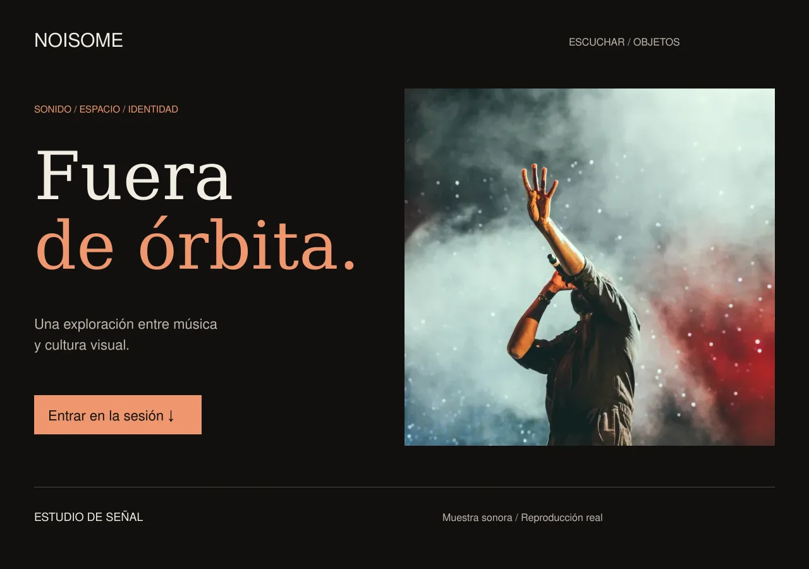
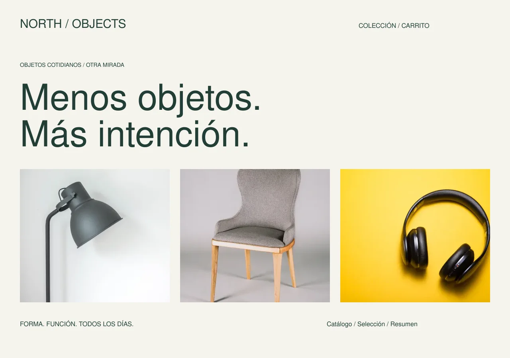
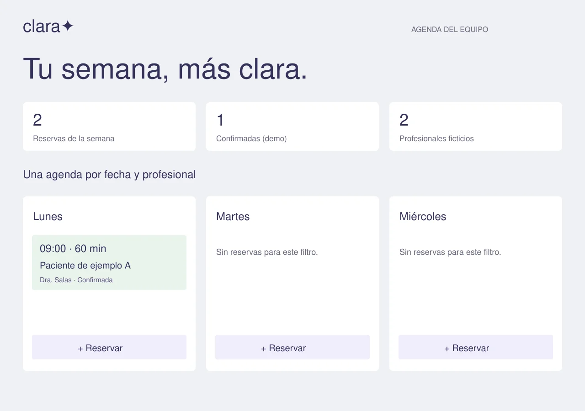
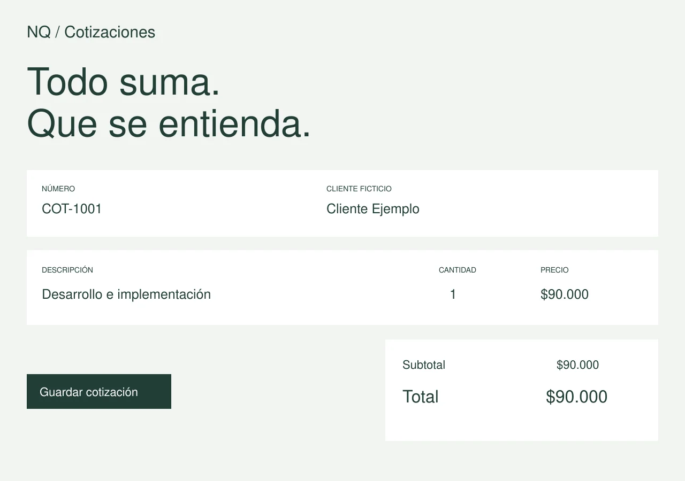
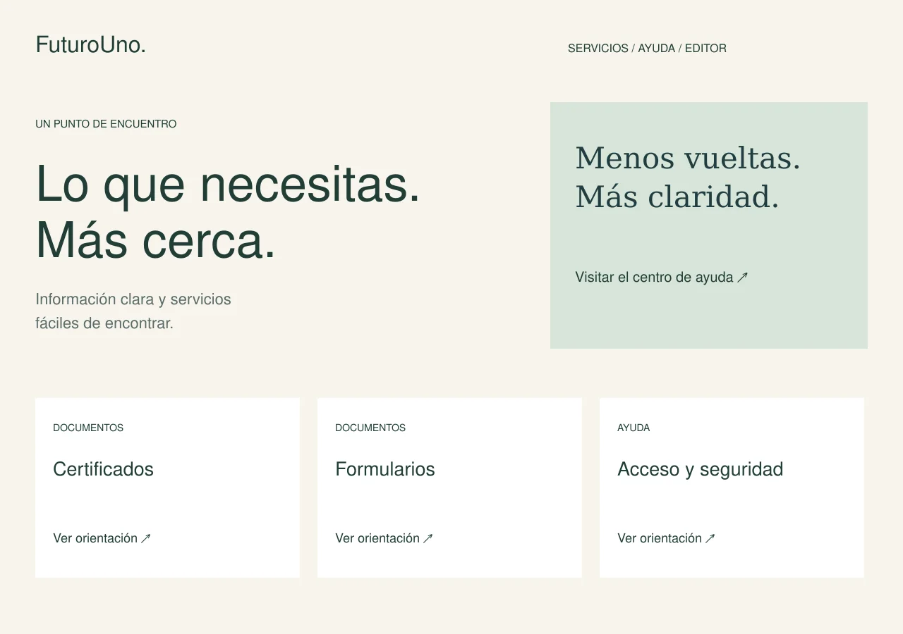

Explorar proyecto ↗
Música e identidad · Concepto funcional
NOISOME / sesiones
Una experiencia editorial donde escuchar, explorar y coleccionar conviven.
Proyectos conceptuales que muestran decisiones de interfaz y recorridos completos. Los datos se guardan solamente en este navegador.

Explorar proyecto ↗Una experiencia editorial donde escuchar, explorar y coleccionar conviven.

Explorar proyecto ↗Del descubrimiento al resumen de compra, con fotografía y decisiones claras.

Explorar proyecto ↗Organizar la semana y reservar sin cruzar horarios de un profesional.

Explorar proyecto ↗Convertir partidas y reglas de cálculo en propuestas claras y recuperables.

Explorar proyecto ↗Servicios fáciles de encontrar y contenidos que se pueden editar y recuperar.